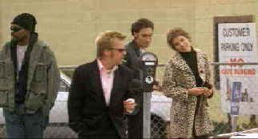

Columbia Tristar/1993//107m/ANA,WS 1.85.FS1.33
 |
Keifer's gang pays the parking. ©Columbia Tristar |
Newly released from prison, Raymond Lembecke wastes little time in reuniting with some
less than desirable citizens to pull off a drug heist. Lembecke puts together a tenuous
team including psycho Curtis Freley, girl friend Addy, and street tough Marcus Weens. Like
all inept heists, this one goes wildly wrong and it's a hot and heavy chase including a
couple of hostages picked up along the way. The final shoot-out is very well done, and
while inconsistent, the film is never boring.
Vincent Gallo is interesting and the ambiguous Raymond Lembecke. Gallo manages to combine elements of sympathy to a generally off the wall character. Sutherland gives himself lots of latitude as Freley, sports a happy trigger finger and a twisted sense of humor. Kim Dickins is a bit cute as Amy and Mykelti Williamson is just fine as Weens. Kevin Pollack adds some color as one of the hostages.
Splendid Dolby Digital 5:1 surround encoding makes Truth or Consequences, N.M. a dynamic aural feast, spraying bullets throughout the home theater environment with precise location and exciting effect. Ambient sound details create the varied settings with enviable professionalism. Visually, this fine first feature is given first rate DVD treatment. The anamorphic images, night and day, are consistently clean. Film grain is controlled for optimum effect. Colors are intense, shadow detail excellent.